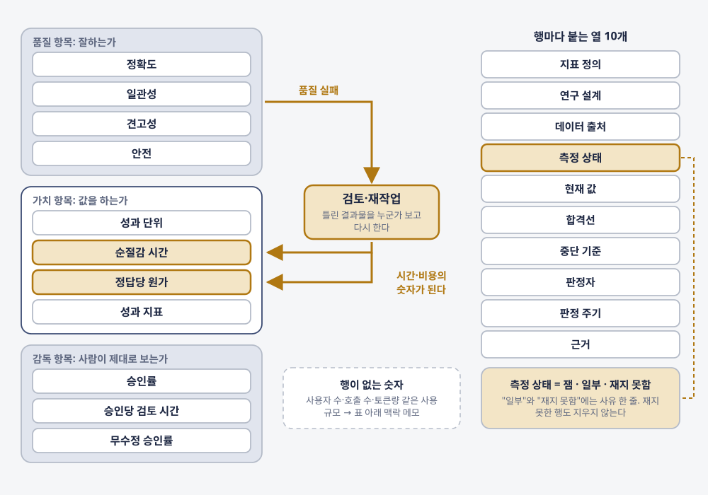
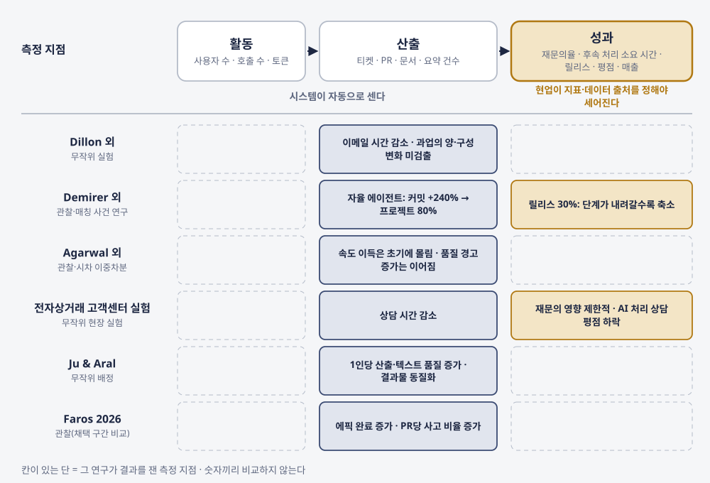
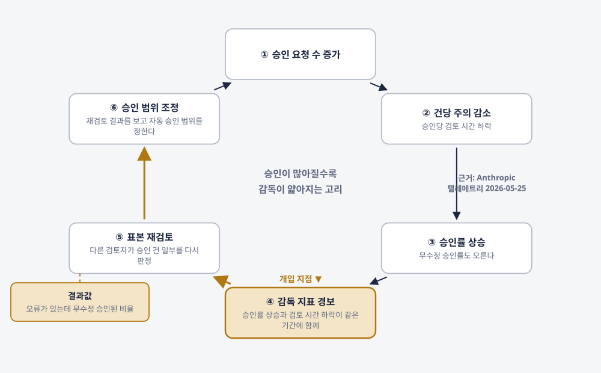
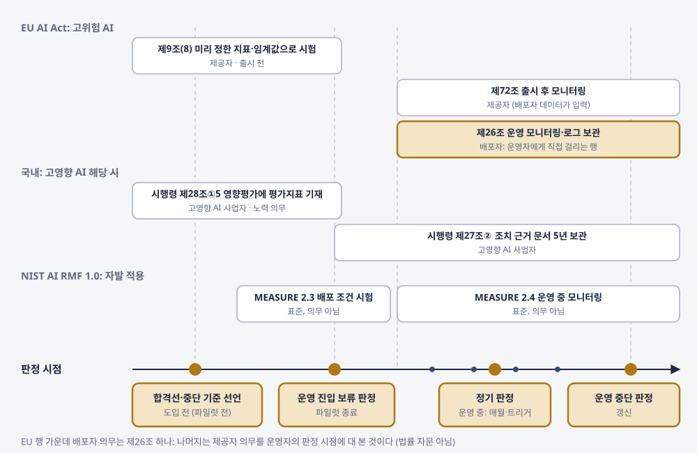
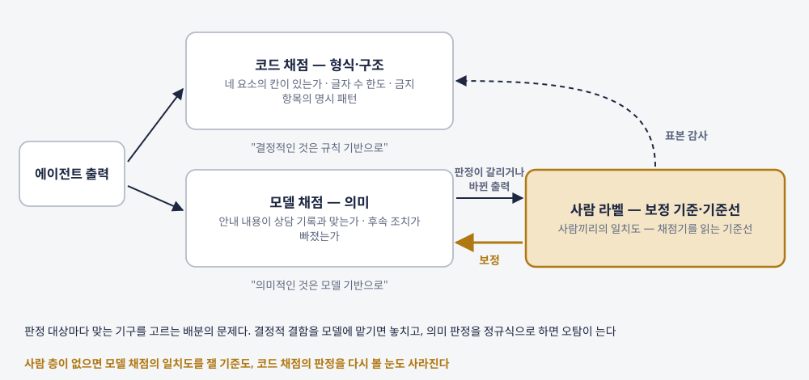

에이전트
성적표
잘하는가와 값을 하는가를 한 장으로 판정하는 법
"조직은 에이전트가 '잘하고 있다'와 '값을 하고 있다'를 무엇으로, 누가, 언제 판정하는가."
이 책을 끌고 가는 질문
검토하고 다시 하는 시간을 넣으면 무엇이 남나
90~327배 → 0.46~1.39배
"When incorporating time to review and redo work, the payoff from using a model shrinks."
GDPval 표 2, 속도 배율. 2025년 10월 arXiv 미심사 프리프린트, OpenAI 저자, OpenAI 모델 4종, 골드 220과제 [논문-미심사]
모델도, 과제도 그대로입니다. 전문가가 결과물을 검토하고, 끝까지 쓸 만한 결과가 나오지 않으면 직접 하는 시간을 계산에 넣었을 뿐입니다. 사람이 실제로 재작업해 본 실험이 아니라 같은 표 안의 시나리오 계산입니다. 그런데 경영 보고에 오르는 숫자는 대개 앞쪽입니다. 벤더 대시보드의 절감 시간, 제안서의 처리 속도는 검토와 재작업이 빠진 계산일 수 있습니다.
품질·가치·감독을 한 장에 적고, 행마다 측정 상태를 붙인다
| 묶음 | 묻는 것 | 행 |
|---|---|---|
| 품질 | 잘하는가 | 정확도 · 일관성 · 견고성 · 안전 |
| 가치 | 값을 하는가 | 성과 단위 · 순절감 시간 · 정답당 원가 · 성과 지표 |
| 감독 | 사람이 제대로 보고 있는가 | 승인률 · 승인당 검토 시간 · 무수정 승인률 |
| 모든 행에 | 무엇을 쟀고, 기준에 닿았나 | 측정 상태(잼·일부·재지 못함 + 사유) · 결과를 보기 전에 적은 합격선·중단 기준 · 판정자 |
품질 실패는 검토·재작업 시간이 되어 가치 항목으로 들어온다. 품질을 따로, 가치를 따로 재면 이 경로가 어느 보고서에도 나타나지 않는다(1장 성적표 양식, T1).
상담 요약 에이전트 하나, 파일럿 6개월
가상의 온라인 가구·생활용품 유통 기업 고객센터. 상담원 약 150명이 상담이 끝나면 벤더의 에이전트가 쓴 요약을 읽고, 고치거나 그대로 저장한다.
가상 사례: 저자가 겪은 일이 아니라 설명을 위해 만든 사례이고, 숫자는 모두 예시 값이다. 같은 종류의 요약을 「에이전트가 사는 곳」 3장은 데이터 등급의 문제로 다뤘고, 이 책은 품질과 가치로만 잰다.
장마다 같은 자리에 같은 장치를 두었다
도입·운영 책임자라면 1~9장을 읽고 13장으로. 평가를 만드는 쪽이라면 1·3장 뒤에 10~12장, 그리고 9·13장. 제품·도구·규정의 상태는 모두 2026년 10월 기준이다.
지금의 숫자를 다시 읽는다
경영 보고에 오르는 에이전트의 숫자는 대개 벤더 대시보드, 사용량, 설문, 벤치마크에서 온다. 그 네 종류의 숫자는 각각 무엇을 쟀고, 무엇을 빼고 셌는가?
- 1장. 품질과 가치를 한 장에
- 2장. 그 숫자는 어떻게 쟀나
- 3장. 공개 벤치마크를 읽는 법
생성 뒤에도 남는 일
문서가 만들어진 뒤의 검토와 다시 하는 일까지가 한 업무라는 1부의 질문을 옮긴 비유이고, 특정 배율이나 시간을 그린 그림이 아니다. 상상으로 그린 장면으로, 실제 조직·시설·제품 화면이 아니고, 그림 속 작은 글씨나 도형은 수치·평가 결과를 나타내지 않는다. 표지와 삽화 6점은 외부 검토자가 이미지 생성 도구로 만든 시안을 저자가 채택했다.
같은 표의 세 줄: 단순 비교, Try 1x, Try n times

저자가 밝힌 한계(사람 결과물 검토 시간·"cost of catastrophic mistakes" 미반영) 때문에 배율은 옮기지 않고 계산 구조만 가져온다.
열한 행과 열 개의 열, 그리고 가운데를 지나는 경로 하나
그림 1-2. 성적표 한 장: 품질·가치·감독 세 묶음과 행마다 붙는 열, 품질 실패가 검토·재작업을 거쳐 가치 항목의 순절감 시간·정답당 원가로 들어가는 경로
성적표 한 장은 에이전트 하나가 맡은 업무 하나를 단위로 한다. 대시보드는 지금 값을 보여 주고, 성적표는 그 값이 무엇을 쟀고 기준에 닿았는지를 판정한다.

첫 보고 초안의 네 숫자: 열한 행 가운데 숫자가 들어간 행은 둘
가상 사례: 저자가 겪은 일이 아니라 설명을 위해 만든 사례이고, 숫자는 모두 예시 값이다. 품질 항목 네 행은 전부 "재지 못함"이다. 요약이 상담 내용을 맞게 옮겼는지 판정한 표본이 없다.
쓰임을 재는 지표의 자리
내가 처음 에이전트의 값을 보고할 때 올린 지표는 비용, 토큰량, MAU 같은 것이었다. 나중에 에이전트 사용자 수로 바꿨다. 조직에서는 여러 사용자가 쓴다는 점이 더 중요했기 때문이다.
"얼마나 드나"에서 "얼마나 넓게 쓰이나"로. 두 지표 모두 쓰임을 재는 쪽에 있다.
1장, 저자 인터뷰 답에서
조직 에이전트는 직원 식별자를 가지고 있어 누가 쓰는지 알 수 있고, 권한 없는 접근은 막아 둡니다. 그래서 사용자 수의 신뢰도는 높습니다. 다만 성적표에서는 품질·가치·감독 항목과 구분해 맥락 정보로 적습니다. 그래야 "사용자가 늘었다"가 "값을 한다"로 읽히지 않습니다.
영국 정부는 같은 도구를 두 번 쟀다
| 항목 | GDS 범부처 실험 | DBT 평가 |
|---|---|---|
| 측정 대상 | 하루 평균 절약 시간(자가 추정) | 생산성 개선 여부, 만족도 |
| 측정 방법 | 구간 선택형 설문, 구간 중간값으로 평균 | 사용 대시보드 + 일지 + 인터뷰 + 관찰 과업 |
| 대조군 | 없음 | 있음 |
| 보고한 결론 | 하루 평균 26분 절약(자가 추정) | 시간 절약이 생산성 개선으로 이어진 증거 없음 / 만족 72% |
| 출처 | GDS, 2025-06-02 게시 [공공] | DBT, 2025-08 [공공] |
표 2-1 발췌. 측정 대상 행부터 다르니 "26분 절약"과 "생산성 개선 증거 없음"은 서로를 반박하는 숫자가 될 수 없다. 설계를 바꾸면 보고할 수 있는 문장이 바뀐다.
METR 무작위 실험: 숙련 오픈소스 개발자 16명, 실제 과제 246개
2025년 7월 발표. 대상은 숙련 개발자 16명과 2025년 2~6월의 도구다. 2026-02-24 후속 실험(57명)은 신뢰구간이 0을 포함했고, AI 없이 하는 과제를 내지 않는 개발자가 늘어 METR가 스스로 "unreliable signal"로 판정했다.
연구 설계 × 데이터 출처: 한 줄 등급표로 섞지 않는다
그림 2-1. 연구 설계 × 데이터 출처: 두 축 격자와 대표 연구의 위치, 인과 주장이 가능한 영역(음영)은 설계 축에만 붙는다
기록으로 잰 숫자도 설계가 없으면 원인을 말하지 못하고, 무작위 실험 안의 숫자도 데이터가 자가 보고라면 체감의 편향을 안고 있다. 숫자 하나에 라벨 두 개(T2).

공개 감사는 분모부터 읽는다: 행끼리 비율을 견주지 않는다
| 대상 | 감사 주체·날짜 | 분모 | 결함 유형 |
|---|---|---|---|
| SWE-bench Verified | OpenAI, 2026-02-23 | o3가 일관되게 못 푼 138문항(500문항 중 27.6%) | 테스트 설계·문제 설명 결함 59.4%, 오염 |
| SWE-Bench Pro 공개 분할 | OpenAI, 2026-07-08 | 731문항 | 고장 약 30% 추정(파이프라인 27.4% / 사람 34.1%), 2월 권고 철회 |
| SWE-bench Verified 통과 PR | METR, 2026-03-10 | AI PR 296개(메인테이너 4명) | 병합 판정이 자동 채점보다 약 24%p 낮음 |
| TAU-bench 외 | ABC 체크리스트 | 벤치마크별 | 빈 응답을 성공으로 셈, 상대값 최대 100% 과대·과소 추정 |
표 3-1 발췌, 2026년 10월 기준. 59.4%의 분모는 138문항이다. SWE-bench Verified 전체 결함률로 옮기면 틀린다. 업무와의 상관을 잰 국내 한 핀테크 기업에서 공개 범용 지수와의 순위상관은 ρ +0.02였다(모델 11개).
벤치마크 점수 확인 질문표: 제안서의 점수 한 줄에 다섯 질문
| 질문 | 답이 이렇다면 |
|---|---|
| 1. 분모는 무엇인가 | 부분집합이면 점수를 전체로 옮기지 않는다 |
| 2. 어느 판본인가 | 판본이 없으면 다른 점수와 비교하지 않는다(Terminal-Bench 2.0~4.0, τ³-bench, OSWorld-Verified) |
| 3. 어떤 하네스와 자원으로 돌렸나 | 자체 환경이면 고정 환경 점수와 나란히 두지 않는다(자원 설정만으로 6%p) |
| 4. 오염은 어떻게 막았나 | 방어가 없으면 기억한 답일 가능성을 열어 둔다 |
| 5. 우리 업무와 상관을 쟀나 | 재지 않았으면 후보 선별용 참고로만 쓴다 |
표 3-2(T4) 발췌. "확인 불가"가 하나라도 있으면 그 점수를 정확도 행에 넣지 않는다. 공개 점수는 모델 후보를 좁히는 1차 필터, 운영 판정은 우리 업무로 만든 평가셋으로.
값을 하는가
무엇을 한 건으로 세고, 절감에서 무엇을 빼고, 합격한 결과 한 건에 얼마가 들었고, 그 결과로 업무가 실제로 움직였는가? 가치 항목 네 행은 각각 어떤 기록에서 채우고, 누가 그 정의를 정하는가?
- 4장. "해결"은 누가 세나
- 5장. 절감 시간에서 빼야 할 것
- 6장. 정답 한 건의 원가
- 7장. 성과는 어디서 재나
청구서의 숫자 하나에는 단위·판정 주체·시간 창이 들어 있다
| 벤더 | 결과 단위 | 판정 주체 | 시간 창·고정 규칙 | 사람 개입의 회계 |
|---|---|---|---|---|
| Zendesk | Automated resolution(Verified만 한도 차감) | 대화 종료 뒤 LLM 검증 | 이메일 첫 이메일 후 72시간 / 메시징 기본 2시간 / 음성 종료 즉시 | Assisted escalation은 한도 차감 없음 |
| Fin(구 Intercom) | confirmed / assumed resolution | 규칙 | 같은 대화로 돌아와 도움을 청하면 차감 | 조건 충족 시 팀원이 종료해도 해결 |
| HubSpot | resolved(두 경로) | 규칙 | 마지막 방문자 응답 후 72시간, 판정 뒤 사건은 상태를 바꾸지 않음 | 방문자가 시작한 핸드오프만 해결을 막음 |
| Salesforce Help Agent | 처음부터 끝까지 자율 해결 | 공개 문서에 없음 | 공개 문서에 없음 | 부정 피드백·사람 연결 요청은 무과금 |
| Sierra | 사전 합의한 결과 | 계약 | 공개 문서에 없음 | 미해결은 대부분 무과금 |
표 4-1 발췌, 2026년 10월 기준 각 벤더 공식 문서 [공식] ✓. 시간 창의 기준점과 사람 개입의 회계가 달라 벤더 간 해결률은 비교되지 않는다. 구매자가 판정을 표본으로 재확인할 권한을 적은 문서는 이번 조사에서 찾지 못했다.
해결 정의 대조표: 청구는 벤더 정의로, 성적표에는 자체 정의를 한 열 더
파일럿 여섯째 달 청구서: 작성된 요약 60,000건 · "수락된 요약"(과금 대상) 57,000건 · 수락률 95%.
| 정의 | 정의 문장 | 판정 주체 | 이번 달 건수 |
|---|---|---|---|
| 벤더 정의(계약) | 저장 후 24시간 안에 삭제·재생성하지 않으면 수락(고쳐 저장해도 수락) | 벤더 시스템(저장 이력) | 57,000건 |
| 자체 정의 1 | 상담원 수정 없이 저장 | 상담 기록 시스템 저장 이력(전수) | 36,000건 |
| 자체 정의 2 | 상담 원문 대비 사실 오류·누락 없음 | QA 담당자(표본 판정) | 표본 400건 중 328건 |
표 4-2(T5) 발췌. 가상 사례: 저자가 겪은 일이 아니라 설명을 위해 만든 사례이고, 숫자는 모두 예시 값이다. 표본 재판정 절차(T6)의 불일치율은 18%(Wilson 95% 약 14.5~22.1%). 저자는 벤더 지표를 재집계해 본 적이 없지만, "벤더나 다른 조직의 지표는 참고는 되지만, 지금 판정하려는 조직에 맞는 지표는 아니라"고 본다.
벤더 추정 총절감 2,000시간에서 네 칸을 덜어 내면

2,000 − 검토 475 − 수정 525 − 재작성 150 − 후속 부서 재확인 300 = 550시간 (가상 사례, 예시 값). 세 구간(읽기·편집·재작성)은 겹치지 않게 잘랐다. 550시간은 상담원 시간 850시간 감소와 후속 부서 시간 최대 300시간 증가를 합친 값이고, 300시간은 재확인 기준선을 빼지 못한 상한이라 550시간은 그만큼 낮게 잡힌 값이다.
분자는 그대로, 분모를 합격 건으로 바꾼다
분자: 좌석 6,000,000원 + 수락 과금 1,710,000원 + QA 판정 약 1,000,000원 = 8,710,000원(고객센터 검토 포함이면 43,210,000원, 후속 부서까지 52,210,000원).
| 분모 | 건수 | 건당 원가 |
|---|---|---|
| 작성된 요약 | 60,000건 | 약 145원 |
| 벤더 정의 "수락" | 57,000건 | 약 153원 |
| 상담원 수정 없이 저장 | 36,000건 | 약 242원 |
| 오류 없는 요약(수락 × QA 표본 합격률 82%): 검토 제외 | 약 46,740건 | 약 186원 (Wilson 구간이면 약 179~196원) |
| 오류 없는 요약: 고객센터 검토·수정·재작성 포함 | 약 46,740건 | 약 924원 |
| 오류 없는 요약: 후속 부서 재확인까지 포함(상한) | 약 46,740건 | 약 1,117원 |
6장 가상 사례의 값. 가상 사례: 저자가 겪은 일이 아니라 설명을 위해 만든 사례이고, 숫자는 모두 예시 값이다. 정답당 원가는 "the expected monetary cost of generating a correct solution"(Erol 외, cost-of-pass) [논문-미심사]. 이름에 비용 범위를 붙인다. 두 모델을 견줄 때는 같은 과업·같은 합격 기준·같은 검토 포함 여부를 함께 적는다.
활동·산출·성과: 측정 지점의 위치가 결론을 바꾼다
그림 7-1. 활동·산출·성과 세 단과 연구별로 효과가 관측된 단 (각 연구의 설계·표본은 표 7-1, 2026년 10월 기준)
자율 코딩 에이전트의 누적 커밋 증가 240%는 프로젝트 수에서 80%, 실제 릴리스에서 30%로 줄었다(Demirer 외 NBER w35275, 2026-09 개정 초록) [논문-미심사]. 사내 업무 에이전트를 성과 지표와 연결한 공개 무작위·준실험 연구는 이번 조사에서 찾지 못했다.

측정 지점 표: 성과 행의 지표는 현업이 정한다
| 단 | 지표 | 정한 사람 | 측정 상태 |
|---|---|---|---|
| 활동 | 요약 생성 건수 · 사용 상담원 수 | (자동 집계) | 잼 |
| 산출 | 저장된 요약 건수 | (자동 집계) | 잼 |
| 성과 | 재문의율: 같은 고객·같은 문제로 7일 안 재연락(12.0% → 11.6%) | 상담 팀장 | 잼(전수), 해석 한정 |
| 성과 | 후속 처리 소요 시간 중앙값(26시간 → 25시간) | 배송·반품 부서 담당자 | 잼(전수), 해석 한정 |
표 7-2(T9) 발췌. 가상 사례: 저자가 겪은 일이 아니라 설명을 위해 만든 사례이고, 숫자는 모두 예시 값이다. 센터장은 0.4%p를 "개선"으로 적지 않았다. 상담 유형 구성 변화와 우연한 흔들림을 아직 보지 않았다. 전수로 쟀으니 측정 상태는 "잼", 대조군이 없어 원인으로 읽을 수 없다는 한계는 "해석 한정"으로 따로 붙인다. "Volume is not value."(Gartner, 2026-10-19)
판정의 규칙
사람이 승인하고 있다는 사실은 감독이 이뤄지고 있다는 증거가 되는가? 운영에 올릴지, 언제 접을지를 가르는 기준은 결과를 보기 전과 뒤 가운데 언제 적어야 하는가?
- 8장. 승인률이 높을 때
- 9장. 합격선을 먼저 적는다
승인 버튼 뒤에서 확인할 것
승인 건수보다 실제로 근거를 들여다보는 일을 재야 한다는 3부의 질문을 옮긴 비유이고, 승인률이나 검토 시간을 나타내지 않는다. 상상으로 그린 장면으로, 실제 조직·시설·제품 화면이 아니고, 그림 속 작은 글씨나 도형은 수치·평가 결과를 나타내지 않는다. 표지와 삽화 6점은 외부 검토자가 이미지 생성 도구로 만든 시안을 저자가 채택했다.
승인의 결과와 승인을 건너뛴 정도는 다른 행에 적는다
자율성 보고서는 기본 설정이 매 행동을 수동 승인하게 되어 있어 이동의 일부는 설정 변경일 수 있다고 스스로 단서를 달았다. 가상 사례의 무수정 저장률은 38% → 63%, 저장당 검토 시간 중앙값은 74초 → 19초였다(예시 값).
승인 수가 늘면 건당 주의가 줄고, 경보와 재검토가 끼어든다

사람+AI가 나은 쪽 단독보다 자동으로 낫지 않다: 시너지 g=−0.23, 효과크기 370개(Vaccaro 외 2024) [논문-심사].
감독 지표표: 다섯 지표와 표본 재검토 오류율
| 지표 | 정의(분자 / 분모) | 함께 볼 지표 |
|---|---|---|
| 승인률 | 승인된 건 / 사람에게 물은 승인 요청 | 승인당 검토 시간 |
| 반려율 | 거절·뒤집기 건 / 승인 요청 | 표본 재검토 오류율 |
| 승인당 검토 시간 | 요청 표시부터 승인까지 시간의 중앙값 | 승인률, 무수정 승인률 |
| 무수정 승인률 | 고치지 않고 승인한 건 / 승인된 건 | 표본 재검토 오류율 |
| 자동 승인 비율 | 사람에게 묻지 않고 실행된 건 / 전체 실행 건 | 반려율 |
| 표본 재검토 오류율 | 다른 검토자가 오류로 판정한 승인 건 / 재검토 표본 | 위 다섯 지표 전부 |
표 8-2(T10) 발췌. 경보 규칙 예: 4주 이동 기준으로 승인률이 오르고 승인당 검토 시간 중앙값이 내려간 주가 2주 연속이면, 승인자가 아닌 검토자가 무작위 표본을 다시 판정한다. 기준값은 결과를 보기 전에 9장 선언서에 적는다.
조짐을 본 사람이 없을 때를 위해
승인 절차가 형식이 되어 간다는 조짐을 나는 블로그 발행용 MCP 도구를 만들면서 알게 됐다.
조짐을 알아채는 일이 절차를 만든 사람의 경험에 기대면, 그 사람이 없는 승인 절차에서는 같은 조짐을 볼 사람이 없다.
8장, 저자 인터뷰 답에서
그래서 감독 지표표에는 승인 기록에서 셀 수 있는 지표만 넣었습니다. 반려율이 0에 가까운 승인 절차는 따로 표시해 두고, 거절 버튼과 사유 입력란이 실제로 있는지, 승인 화면에서 결과물 원문을 볼 수 있는지부터 확인합니다.
배포자에게 직접 걸리는 행은 제26조 하나다
그림 9-1. 판정 시점과 규정·표준이 요구하는 지점 (2026년 10월 기준, 법률 자문 아님)
EU AI Act 제9조(8) "prior defined metrics and probabilistic thresholds"는 고위험 AI 제공자의 의무다. 국내 감독·문서 조치(법 제34조①, 시행령 제27조② 5년 보관)는 고영향 AI 사업자 대상이다. 이 책의 선언서는 그 순서를 운영자 성적표에 가져온 저자 설계다. 파일럿을 운영에 올리지 않을 지침이 있다고 답한 CIO는 31%, 운영 중인 저가치 AI 이니셔티브를 접을 지침은 17%였다(Gartner, 2026-10-19, 자가 보고, 상관) [애널리스트].

합격선·중단 기준 선언서: 판정 분기의 표본을 열기 전에 서명한다
| 행 | 합격선 (값·판정 방식) | 운영 진입 보류 | 운영 중단 |
|---|---|---|---|
| 정확도 | 양측 95% Wilson 구간 하한 88% 이상, QA 담당자 재판정(월 400건, 분기 판정은 셋째 달 표본) | 하한 85% 미만 (85~88%는 조건부 연장 한 번, 한 분기까지, 승인자 운영 책임자) | 두 분기 연속 미달 |
| 일관성(pass^3) | 점추정 90% 이상(20건 × 3회, 구간은 함께 적되 구간 판정 안 함) | 80% 미만 | 회귀 평가 실패 |
| 순절감 시간 | 상담당 0분 초과 | 0분 이하 | 두 분기 연속 0분 이하 |
| 정답당 원가 | 상한 200원 이하(검토 제외, 분기 예산에서 역산) | 상한 초과 | 두 분기 연속 초과 |
| 성과(재문의율) | 파일럿 전보다 높지 않음 | 상승 | 두 분기 연속 상승 |
| 감독(승인당 검토 시간) | 판정 분기 중 경보 0회(경보 1회는 미달, 표본 재검토) | 경보 연속 2회 | 경보 연속 3회 |
| 안전 · 고객 만족 영향 | 재지 못함: 안전은 미측정 동안 허용 범위(사내 상담 기록 저장 한정)와 즉시 중지 조건(개인정보 기재·지시 주입 1건)을 적는다 | - | - |
표 9-2(T11) 발췌. 가상 사례: 저자가 겪은 일이 아니라 설명을 위해 만든 사례이고, 숫자는 모두 예시 값이다. 판정자는 만든 쪽이 아닌 사람이고, 벤더 구축 담당과 사내 AX 개발자는 서명하지 않는다. 저자는 "운영 전에 합격 기준을 글로 적어 둔 베이스라인이 아직 없고, 이제 정하려 한다"고 답했고, 한정된 자원이 기준선을 정할 것으로 본다.
평가를 만드는 쪽
품질 항목을 재는 기구, 곧 평가셋과 채점기와 정기 평가는 누가 어떻게 만들고, 그 기구가 사람 판정과 얼마나 맞는지는 무엇으로 확인하는가?
- 10장. 평가셋은 현업과 만든다
- 11장. 채점기를 보정한다
- 12장. 회귀를 잡는 정기 평가
만드는 쪽에 물을 세 가지
출발점은 "20-50 simple tasks drawn from real failures"(Anthropic, 2026-01-09). 가상 사례는 재문의 상담 30건으로 시작했다. 운영 실패가 문항이 되고, 문항의 주인은 현업이다.
채점 기준은 이진 판정으로 한다. "Binary evaluations force clearer thinking and more consistent labeling."(Hamel Husain·Shreya Shankar, 2026-09). 출력을 채점해 봐야 정할 수 있는 기준이 있다(채점 기준의 표류). 기준을 고치면 판본을 올린다.
사람끼리의 일치도를 기준선으로 둔다
가상 사례 값은 예시 값이다. Shopify는 "Treat human agreement levels as the theoretical maximum our LLM judges can achieve."라고 적었다. 목표를 정하는 운영 규칙이지 수학적 상한은 아니다(합의 라벨과 비교하면 사람 한 쌍보다 높게 나올 수 있다). 일치율 옆에 우연 보정 지표를 함께 적는다. 저자의 경우 자동 채점과 사람 판정이 어긋나면 대부분 사람이 맞았고, 그 이유를 맥락 정보로 짐작한다.
형식은 코드, 의미는 모델, 보정 기준과 경계 사례는 사람

"결정적인 것은 규칙 기반으로, 의미적인 것은 모델 기반으로."(국내 한 핀테크 기업) 보정 기록이 없는 자동 점수는 판정에 쓰지 않는다(T14).
평가 자산이 도구 벤더의 일정에 묶여 있을 수 있다
| 도구 | 변화 | 날짜 |
|---|---|---|
| OpenAI Evals | 기존 eval 읽기 전용, 대시보드·API 종료 예정("Existing evals become read-only.") | 2026-10-31 / 2026-11-30 예정 |
| Promptfoo | OpenAI가 인수하기로 했다고 발표(완료일 미확인) | 발표 2026-03-09 |
| Langfuse | ClickHouse가 인수 발표, 핵심 기능은 MIT 오픈소스 유지 | 2026-01-16 |
| Galileo | Cisco가 인수 완료 | 완료 2026-05-22 |
| Arize(Phoenix·AX) | Dynatrace가 인수 완료, 지원 지속 | 완료 2026-10-01 |
표 12-1 발췌 [공식] ✓. 이관 안내는 평가셋·채점 기준을 새 도구 설정에 손으로 다시 구성하는 절차를 적는다. 에이전트·도구 워크플로는 따로 세워야 하고, 과거 실행 결과를 옮기는 방법은 안내에 없으며, 채점기는 다시 검증해야 한다. 같은 이름의 GPT-4가 석 달 사이 한 과제에서 84% → 51%(Chen·Zaharia·Zou). 같은 문항을 다시 돌린 사람만 안다.
재평가 트리거표: 무엇이 바뀌면 무엇을 다시 재나
| 트리거 | 어떻게 알아채나 | 다시 잴 범위 |
|---|---|---|
| 정기(달력) | 일정 | 고정 패널 또는 회귀 평가셋 전체, 직전 기간과 문항별 짝지은 차이 |
| 바탕 모델 교체·변경 | 벤더 통지 / 응답의 모델 이름·판본 기록, 고정 패널 차이 | 회귀 평가셋 전체 + 채점기 재보정 |
| 프롬프트·도구·검색 파이프라인·라우터 변경 | 배포 기록 | 변경이 닿는 행의 문항(라우터는 원가 행까지) |
| 공급자 품질 사고 공지 | 상태 페이지·사후 분석 글 | 해당 기간 운영 표본 재채점 |
| 사용자 저하 보고 | 현업·사용자 보고 창구 | 보고된 업무의 표본 사람 판정 + 회귀 평가 |
표 12-2(T15) 발췌. 저자가 본 경우에도 품질 저하를 먼저 알린 쪽은 평가보다 사용자였다. 가상 사례에서 벤더가 요약 모델을 바꾸자 전체 통과율은 거의 같았지만 "후속 조치" 문항에서 4문항 더 실패했다(예시 값).
누가, 언제 판정하나
앞의 열두 장이 만든 도구를 한 장의 성적표로 모으면, 연장 여부는 누가 어떤 순서로 판정하는가?
- 13장. 누가, 언제 판정하나
판정 분기 셋째 달, 한 장에 모인 것
| 항목 | 현재 값 | 합격선 | 측정 상태 |
|---|---|---|---|
| 품질 · 정확도 | 89%(400건 중 356건), Wilson 95% 구간 약 85.6~91.7% | 구간 하한 88% 이상 | 잼, 미달(보류 기준 85%에는 안 걸림) |
| 품질 · 일관성(pass^3) | 90%(20건 중 18건, 점추정 판정) | 점추정 90% 이상 | 일부: 대상 불일치 |
| 품질 · 안전 | - | 합격선 아님 · 다음 판정 전 문항 확보 | 재지 못함(허용 범위·즉시 중지 조건 확인) |
| 가치 · 순절감 시간 | 월 약 710시간(상담 1건당 약 0.7분) | 상담당 0분 초과 | 일부: 절감은 벤더 추정, 기준선 미측정 |
| 가치 · 정답당 원가(검토 제외) | 약 172원(구간 약 167~179원) | 상한 200원 이하 | 잼(분모 표본 추정) |
| 가치 · 성과(재문의율) | 11.6%(파일럿 전 12.0%) | 파일럿 전보다 높지 않음 | 잼(전수), 해석 한정 |
| 감독 · 검토 | 검토 19초 → 15초, 무수정 저장 63% → 67%, 경보 1회 | 판정 분기 중 경보 0회 | 일부, 경보 |
표 13-1(T17) 발췌. 가상 사례: 저자가 겪은 일이 아니라 설명을 위해 만든 사례이고, 숫자는 모두 예시 값이다. 순절감·원가는 13장 사례 원장에서 나왔다(건수·비용은 여섯째 달과 같다고 가정). 판정 순서: 정량 중단 기준에 걸린 행(0개) → 안전 행의 허용 범위·즉시 중지 조건 확인 → 합격선 미달 행(2개, 정확도·감독) → "재지 못함" 행(2개, 안전·고객 만족 영향). 벤더 "수락" 95%는 참고 값으로만 적혀 있다.
센터장이 유예 조항으로 3개월 조건부 연장을 승인했다
내가 본 에이전트에서 판정한 쪽은 쓰는 쪽이었다. 그리고 재지 못한 지표는 운영 단계로 넘어가지 않으면 잴 수 없는 지표였다.
그래서 평가셋의 주인은 현업, 채점은 독립 판정자, 평가 실행은 만드는 쪽, 합산 숫자의 소유자는 운영 책임자 한 명.
13장, 저자 인터뷰 답과 판정 일정표(T18)
가상 사례: 운영 책임자인 센터장이 선언서의 유예 조항(하한 85% 이상 88% 미만)으로 승인하고, COO가 그 판정을 받아 연장을 결정했다. 조건 네 줄: 정확도를 3개월 뒤 같은 표본 크기로 다시 판정하고 또 미달이면 연장하지 않는다 · 감독 경보의 표본 재검토를 다음 달 안에 마친다 · 벤더 계약에 자체 정의 재판정 공유와 모델 교체 사전 통지 조항을 넣는다 · 안전 문항을 평가셋 다음 판에 넣고, 그때까지 저장 범위를 사내 상담 기록으로 한정하며 개인정보 기재나 지시 주입이 1건이라도 확인되면 즉시 멈춘다.
재지 못한 항목을 남긴 성적표
재지 못한 행을 숨기지 않은 채 조건을 붙여 판정하는 장면을 비유한 그림이고, 재지 못한 안전 항목이 있어도 늘 연장해도 된다는 뜻이 아니다. 상상으로 그린 장면으로, 실제 조직·시설·제품 화면이 아니고, 그림 속 작은 글씨나 도형은 수치·평가 결과를 나타내지 않는다. 표지와 삽화 6점은 외부 검토자가 이미지 생성 도구로 만든 시안을 저자가 채택했다.
질문 하나, 답 하나
조직은 에이전트가 "잘하고 있다"와 "값을 하고 있다"를 무엇으로, 누가, 언제 판정하는가.
품질·가치·감독을 한 장에 적고, 행마다 측정 상태와 결과를 보기 전에 적은 합격선을 붙이고, 만든 쪽이 아닌 사람이 정해 둔 시점에 판정한다.
서문, 1·9·13장
이 책이 답하지 못한 것도 적어 둡니다. 사내 에이전트를 성과 지표와 연결한 공개 실험이 없고, 구매자가 "해결"을 다시 판정할 권한을 적은 문서를 찾지 못했고, 하류 재작업과 안전 행의 근거가 가장 얇습니다. 성적표를 쓰는 조직의 성과가 오른다는 근거도 아직 없습니다.
가설 카드 8장, 근거 강도 순으로
가설이며, 사실로 확인된 것이 아니다. 약 다섯 장은 모두 "지금 그것이 없다"는 관찰이나 초안·개발 단계의 문서에 기댄다. 판정은 받아들임 · 범위 축소 · 보류 · 버림 가운데 하나, 처음 근거 강도는 고치지 않는다.
다음 주에 할 일은 한 줄이다
- 지금 경영 보고에 올리는 에이전트 하나를 고른다.
- 성적표 양식의 첫 행 "품질 · 정확도"만 채운다: 지표 정의 한 문장, 데이터 출처, 사람 판정과 맞춰 본 기록이 있는지, 측정 상태.
- 맞춰 본 기록이 없으면 측정 상태에 "일부", 사유에 "채점기 보정 기록 없음"을 적는다.
- 평가를 만드는 쪽이라면 그 행 옆에 채점기 보정 기록지(T14) 한 장을 붙여 운영 책임자에게 건넨다.
가장 빨리 낡을 곳은 12장의 도구 일정과 소유권 표다. 계약이나 설계에 쓰기 전에 각 표의 공식 문서를 다시 열어 확인 날짜를 고쳐 적는다.
에이전트
성적표
잘하는가와 값을 하는가를 한 장으로 판정하는 법
초안 판본 v1.1.1(2026-11-07). 리서치와 초안은 AI 에이전트들이 썼고, 외부 편집 검토서를 사실 재대조 뒤에 반영했지만 저자 전문 검토 전 판본입니다. 표지와 삽화는 외부 검토자가 이미지 생성 도구로 만든 시안을 저자가 채택했습니다.
CC BY-NC-SA 4.0 · ksangki.github.io/agent-eval